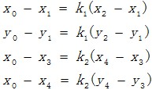
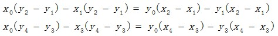
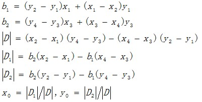
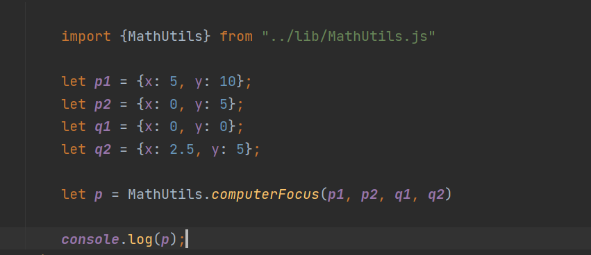
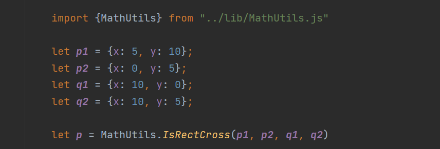
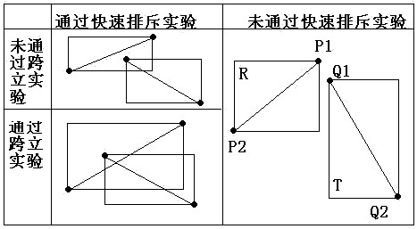
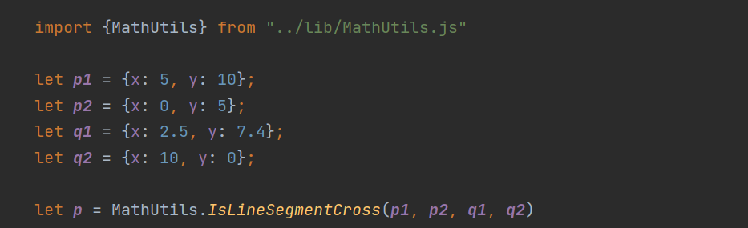
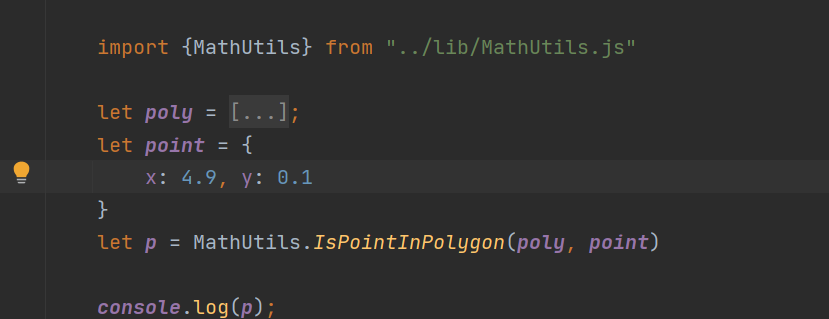
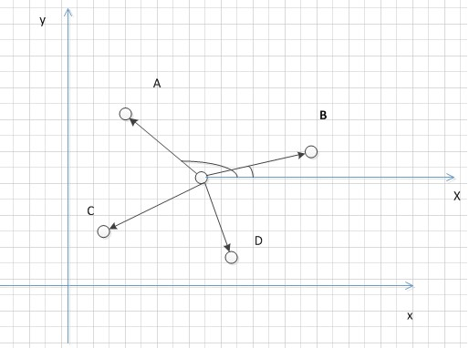
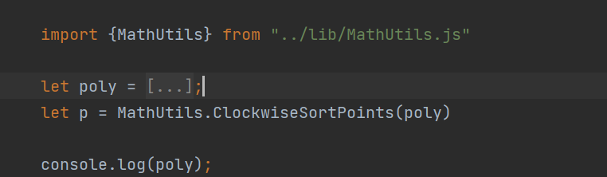

向量法求解线交点:
设交点为(x0,y0)，则下列方程组成立：

根据以上方程组，消除参数k1和k2，得到如下方程：

然后求解(x0,y0)，结果如下所示：

代码实现：Math.computerFocus()

线段交点计算:
已知两条线段P1P2和Q1Q2，判断P1P2和Q1Q2是否相交，若相交，求出交点。
设以线段P1P2为对角线的矩形为R，设以线段Q1Q2为对角线的矩形为T，如果R和T不相交，则两线段不相交。

2.跨立实验:如果两线段相交，则两线段必然相互跨立对方。
若P1P2跨立Q1Q2，则矢量(P1-Q1)和(P2-Q1)位于矢量(Q2-Q1)的两侧，即( P1 - Q1 ) × ( Q2 - Q1 ) * ( P2 - Q1 ) × ( Q2 - Q1 ) < 0。
若Q1Q2跨立P1P2，则矢量(Q1-P1)和(Q2-P1)位于矢量(P2-P1)的两侧，即( Q1 - P1 ) × ( P2 - P1 ) * ( Q2 - P1 ) × ( P2 - P1 ) < 0。
排斥实验和跨立实验的示例如下图所示:


3.计算交点使用向量计算线交点计算线段交点
计算实例多边形是否包含指定点:
已知点P(x,y)和多边形Poly，判断点P(x,y)是否在多边形内部。
当L和多边形的交点数目C是奇数的时候，P在多边形内，是偶数，则P在多边形外。
条件1：((ploy[i].y <= pt.y) && (pt.y < poly[j].y)) || ((ploy[j].y <= pt.y) && (pt.y < poly[i].y))
由于判断过程主要是判断，射线L与多边形每条边是否存在交点，而射线L平行于X轴，因此条件1相当于判断点P在Pi和Pj在垂直距离之间。
条件2: (pt.x < (poly[j].x - poly[i].x) * (pt.y - poly[i].y)/(poly[j].y - poly[i].y) + poly[i].x)
条件2可转换成：(pt.x - poly[i].x) * (poly[j].y - poly[i].y) - (poly[j].x - poly[i].x) * (pt.y - poly[i].y) < 0，相当于向量PiP和向量PiPj的叉积。
当向量PiP和向量PiPj的叉积小于0时，向量PiP在向量PiPj的逆时针方向，相当于向量PiP在向量PiPj的右侧，而射线L由左侧射出，而且点P在Pi和Pj在垂直距离之间，因此，射线L和PiPj的跨立条件成立，相交。
实例
多边形点集排序
问题描述：已知多边形点集C={P1,P2,...,PN}，其排列顺序是杂乱，依次连接这N个点，无法形成确定的多边形，需要对点集C进行排序后，再绘制多边形。
点集排序过程中，关键在于如何定义点的大小关系。
以按逆时针排序为例，算法步骤如下：
定义：点A在点B的逆时针方向，则点A大于点B
1.计算点集的重心O，以重心作为逆时针旋转的中心点。
2.计算点之间的大小关系。
大小关系的计算，可由两种方法进行计算。
方法1：以重心O作一条平行于X轴的单位向量OX，然后依次计算OPi和OX的夹角，根据夹角的大小，确定点之间的大小关系。 OPi和OX夹角越大，说明点Pi越小，如图所示。

方法2：根据向量叉积的定义，向量OPi和OPj的叉积大于0，则向量OPj在向量OPi的逆时针方向，即点Pj小于点Pi。

多边形交集
已知两个多边形Poly1和Poly2，分别由点集C1={P1,P2,...,Pm}和C2={Q1,Q2,...,Qn}表示，求这两个多边形的交集。
两个多边形相交后，其顶点要么是两个多边形边的交点，要么是在多边形内部的点。
算法步骤：1.计算两个多边形每条边之间的交点。
2.计算包含在多边形内部的点。
3.将交点和多边形内部的点，按逆时针(或顺时针)排序，得出最终的点集。